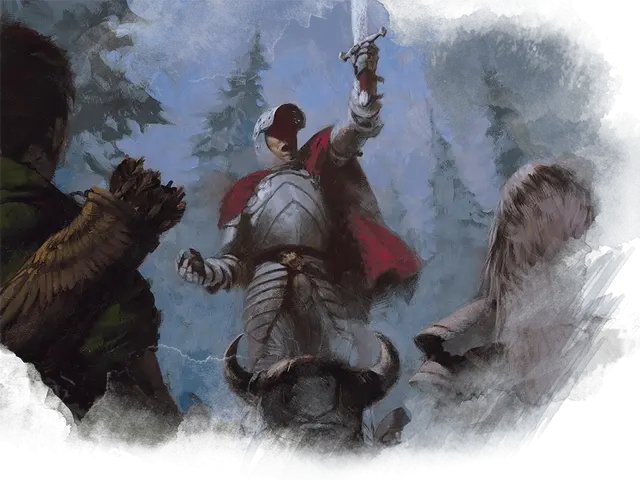

Воодушевляющий лидер
Inspiring Leader
Требование: Харизма 13 или выше

Вы можете потратить 10 минут на воодушевление спутников, укрепляя их решимость. Если вы делаете это, выберите до шести дружественных существ (можете включить себя) в пределах 30 футов от себя, которые могут видеть или слышать вас, и которые могут вас понять. Все эти существа получают временные хиты в количестве, равном вашему уровню + ваш модификатор Харизмы. Существа больше не могут получать временные хиты от этой черты, пока не окончат короткий или продолжительный отдых.